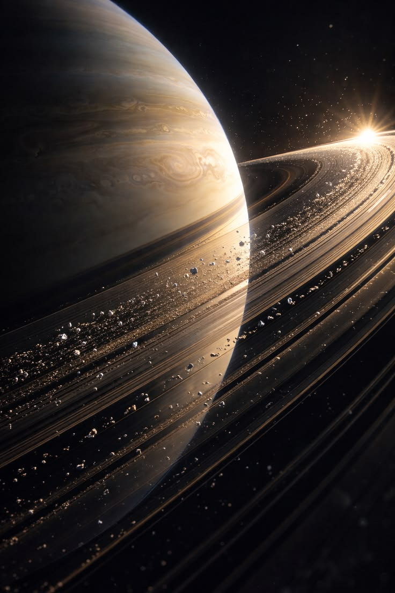

Introducción
Saturno es el sexto planeta del Sistema Solar. Es conocido por sus grandes y brillantes anillos, que están formados principalmente por hielo, polvo y fragmentos de roca.
Foto real de Saturno

INFORMACIÓN
Saturno es un planeta gigante gaseoso y sus anillos son uno de sus elementos más característicos.
Información sobre la foto
La fotografía muestra a Saturno rodeado por su impresionante sistema de anillos.